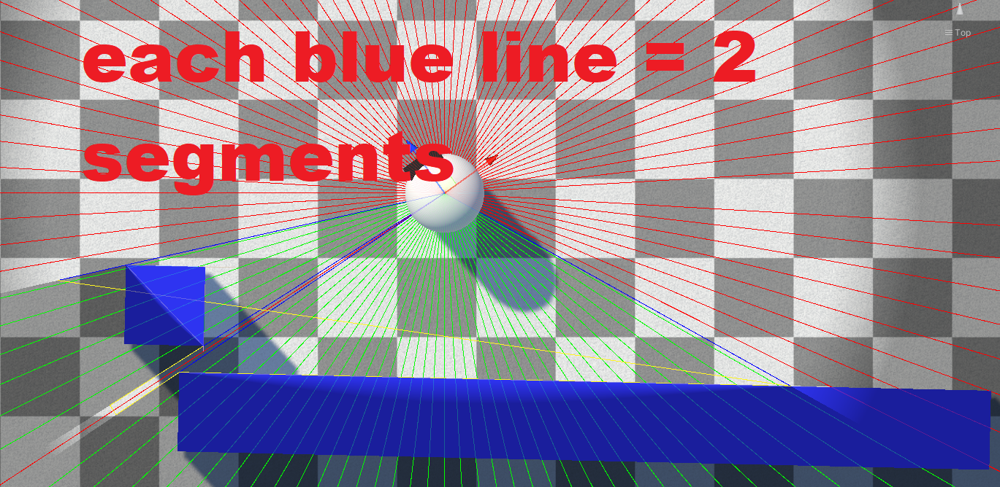

Fog Of War World
The Fog Of War World component is the heart of the system. There should be exactly one in your scene, and it owns every global fog setting, drives revealer updates, and renders the fog.
Adding the Component
- Create a new empty GameObject in your scene. Name it Fog Of War (or similar).
- Add the Fog Of War World component to it.
Essential Settings
A few values must be set sensibly to avoid runtime errors. They are fixed-size because resizing GPU buffers at runtime is slow, so the buffers are pre-allocated from these limits.
| Property | Description |
|---|---|
| Max Possible Revealers | The maximum number of revealers that can be active at once. The GPU buffer is sized from this value. |
| Max Possible Segments Per Revealer | The maximum number of sight "segments" a single revealer can produce. A segment is one edge of the revealer's line-of-sight polygon. Setting this too low causes errors — leave it at a reasonable value. Enable Debug Mode on a revealer to visualize these segments. |
| Max Possible Hiders | The maximum number of hiders. This will auto-resize if exceeded, but that causes a one-time hitch — size it appropriately up front. |
Important
If a revealer needs more segments than Max Possible Segments Per Revealer allows, you will get a console error telling you to raise the value. See Debugging.
Each edge a revealer sees adds two segments — enabling Debug Mode on a revealer draws them:

2D Projects
If your project is 2D, enable the Is 2D? checkbox. See 2D Setup for the full walkthrough.
Game Plane Orientation
For 3D projects, Game Plane Orientation controls which world plane the fog is calculated on:
- XZ — the standard horizontal ground plane (top-down / most 3D games)
- XY — a vertical plane
- ZY — a vertical plane
Choosing a Fog Sample Mode
The Fog Sample Mode determines how fog is sampled and which features are available (regrow, minimap, etc.). This is an important early decision — see Fog Sample Modes.
Next Steps
- Render Pipeline Setup — render the fog in your pipeline
- Configuration — full reference for every Fog Of War World property